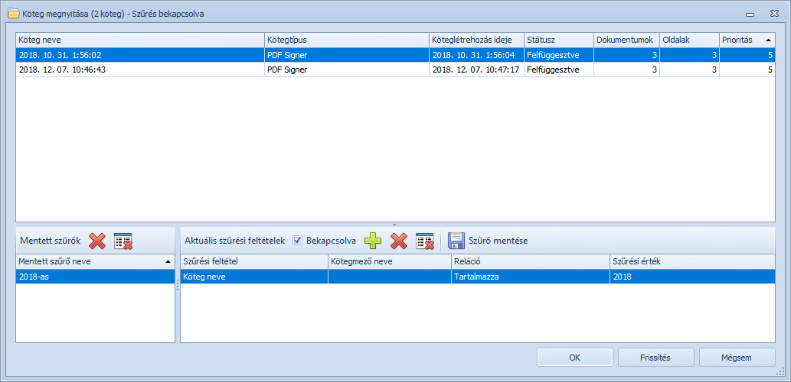

Amennyiben van hitelesítésre várakozó köteg, akkor a PDF Signer for Tungsten Capture modul indulásakor automatikusan megjelenik a köteg megnyitása ablak.

Köteg megnyitása ablak
Ebben az ablakban választhatjuk ki a hitelesítésre megnyitni kívánt köteget.
A köteg megnyitását követően a rendszer automatikusan az első hitelesítendő dokumentumra ugrik.
Amennyiben nincs a kötegben hitelesítendő irat, vagy már minden szükséges iratot hitelesítettünk, akkor az alábbi üzenet jelenik meg:
Minden irat feldolgozva
Copyright © 2025. Doc-Soft Kkt. Minden jog fenntartva.